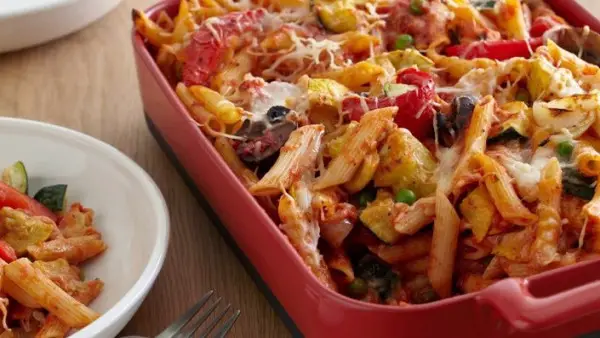

Baked Penne with Roasted Vegetables
Quick and easy pasta bake.

Ingredients:
- 2 red peppers, cored and cut into 1-inch wide strips
- 2 zucchini, quartered lengthwise and cut into 1-inch cubes
- 2 summer squash, quartered lengthwise and cut into 1-inch cubes
- 4 cremini mushrooms, halved
- 1 yellow onion, peeled and sliced into 1-inch strips
- 1/4 cup extra-virgin olive oil
- 1 teaspoon salt, divided
- 1 teaspoon freshly ground black pepper, divided
- 1 tablespoon dried Italian herb mix or herbs de Provence
- 1 pound penne pasta
- 3 cups marinara sauce (store bought or homemade)
- 1 cup grated fontina cheese
- 1/2 cup grated smoked mozzarella
- 1 1/2 cups frozen peas, thawed
- 1/4 cup grated Parmesan, plus 1/3 cup for topping
- 2 tablespoons butter, cut into small pieces
Instructions:
- Preheat the oven to 450 degrees F.
- On a baking sheet, toss the peppers, zucchini, squash, mushrooms, and onions with olive oil, 1/2 teaspoon salt, 1/2 teaspoon pepper, and dried herbs. Roast until tender, about 15 minutes.
- Meanwhile, bring a large pot of salted water to a boil over high heat. Add the pasta and cook for about 6 minutes. Since you will be cooking the pasta a second time in the oven, you want to make sure the inside is still hard. Drain in a colander.
- In a large bowl, toss the drained pasta with the roasted vegetables, marinara sauce, cheeses, peas, 1/2 teaspoon salt, and 1/2 teaspoon pepper. Using a wooden spoon, gently mix, until all the pasta is coated with the sauce and the ingredients are combined.
- Pour the pasta into a greased 9 by 13-inch pan. Top with the remaining 1/3 cup Parmesan and butter pieces. Bake until top is golden and cheese melts, about 25 minutes.